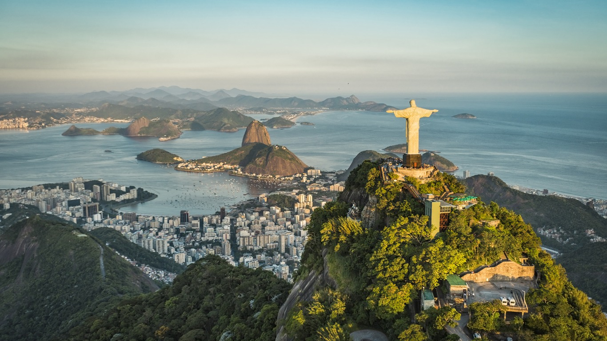

January is mid-summer in New Zealand, making it perfect for outdoor adventures.
Queenstown offers warm weather, lake activities on Lake Wakatipu, vineyard tours, and world-class hiking.
It’s also known as the adventure capital of the world for bungee jumping, jet boating, and skydiving. https://share.google/yewLctSUpdhXLyyJW
February — Rio de Janeiro

February is often when the famous Rio Carnival happens.
The city explodes with samba parades, street parties, music, and incredible costumes.
The hot summer weather also makes nearby beaches like Copacabana perfect.
March — Kyoto
Late March marks the beginning of the cherry blossom season.
Kyoto’s temples, gardens, and traditional streets become stunning under pink sakura trees.
It’s one of the most iconic seasonal sights in the world.